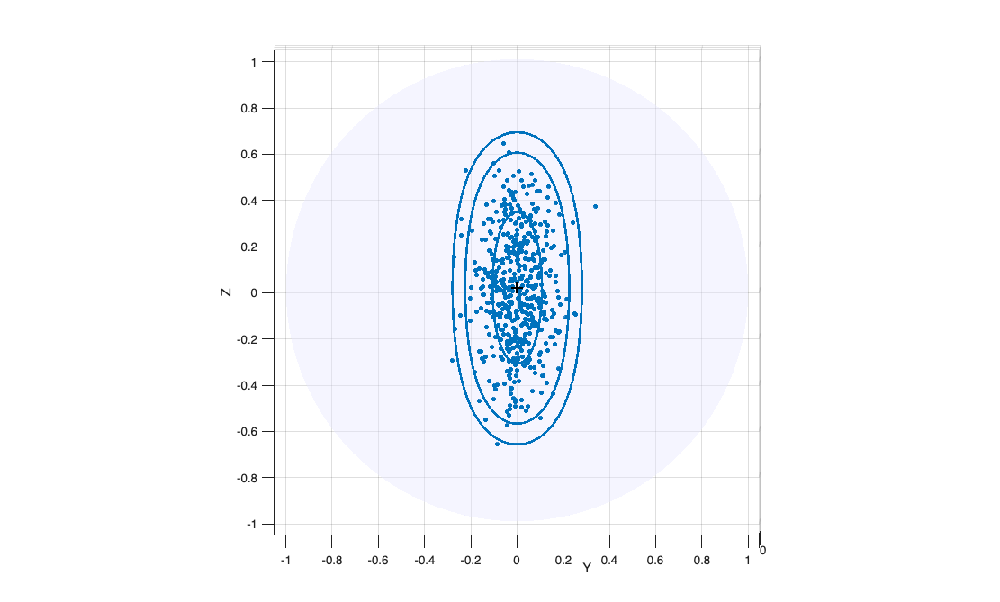

Kentcap
Kentcap computes the boundary of the confidence region of a Kent distribution on S^
Syntax
Description
Kentcap is the Kent counterpart of vMFcap. The contours of constant density of the von Mises-Fisher distribution are circles around the mean direction, so that its confidence region is a spherical cap. The contours of the Kent(kappa,beta,Gamma) distribution are instead ovals around the pole gamma3, elongated along the major axis gamma1: the confidence region is an "elliptical cap". Kentcap returns npts points on the boundary of the region {y in S^2 : f(y; kappa,beta,Gamma) >= t} where the threshold t is such that the probability of the region under Kent(kappa,beta,Gamma) is conflev. The points are ordered along the contour, which is a closed curve.
Examples
 Elliptical caps at different confidence levels.
Elliptical caps at different confidence levels.
Elliptical caps at different confidence levels..
rng(1)
g3 = [1 0 0]; g1 = [0 0 1]; kappa = 60; beta = 25;
Y = Kentrnd(500, kappa, beta, g3, g1);
P50 = Kentcap(g1, [], g3, kappa, beta, 0.50);
P95 = Kentcap(g1, [], g3, kappa, beta, 0.95);
P99 = Kentcap(g1, [], g3, kappa, beta, 0.99);
% the three regions refer to the same group (same colour)
sphereplot(Y, 'cap', {P50, P95, P99}, 'center', [g3; g3; g3], ...
'capgroup', [1 1 1], 'capfill', false);
Input Arguments
Output Arguments
More About
References
Kent, J.T. (1982), The Fisher-Bingham distribution on the sphere, J. Roy. Statist. Soc., B, Vol. 44, pp. 71-80.
See Also
vMFcap
|
Kentrnd
|
sphereplot
|
logKentpdfFS
|
tclustkent